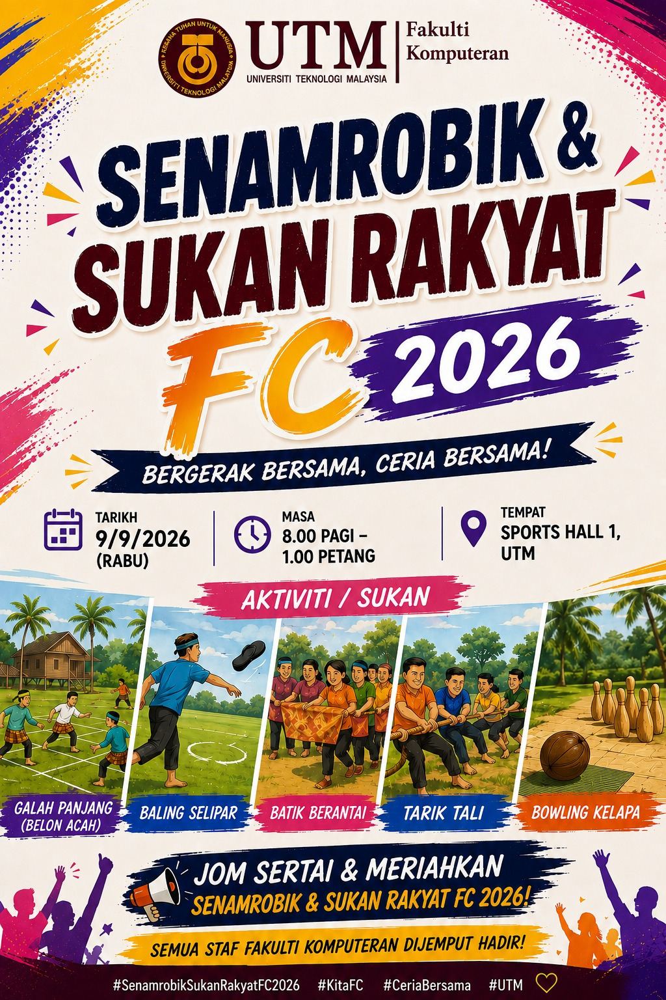

SESI 4 · LATIHAN PENGURUSAN PROGRAM
Daripada poster kepada program yang lengkap.
Gunakan Google Gemini secara langkah demi langkah untuk merancang, mempromosi, melaksanakan dan melaporkan program Senamrobik & Sukan Rakyat FC 2026.

FAKTA DARIPADA POSTER
Maklumat yang mesti dikekalkan
Gunakan fakta ini sebagai sumber tunggal sehingga urus setia memberikan maklumat tambahan.
Aktiviti poster: Senamrobik, Galah Panjang (Belon Acah), Baling Selipar, Batik Berantai, Tarik Tali dan Bowling Kelapa. Maklumat seperti penganjur, jumlah peserta, bajet, nama perasmi, tentatif terperinci dan jawatankuasa belum dinyatakan—Gemini mesti menandainya sebagai PERLU DISAHKAN.
ALIRAN LATIHAN
13 langkah daripada idea hingga berita
Muat naik poster ke Google Gemini. Gunakan semua prompt dalam perbualan yang sama dan semak hasil setiap langkah sebelum meneruskan.
1Brief2Kertas kerja3Pelan program4Tugas & risiko5Poster6Slaid7Hebahan8Video9Lagu10MC11Penilaian12Laporan13Berita
PROMPT LANGKAH DEMI LANGKAH
Semak output sebelum menyalin prompt seterusnya
Setiap prompt menggunakan hasil yang telah disahkan daripada langkah sebelumnya.
Bina brief program yang disahkan
Tambahan penting: Mengelakkan maklumat rekaan berulang dalam semua bahan.
Bertindak sebagai pegawai urus setia program Fakulti Komputeran UTM. Teliti poster Senamrobik & Sukan Rakyat FC 2026 yang dimuat naik. Ekstrak semua maklumat kepada jadual dengan lajur: perkara, maklumat pada poster, status pengesahan dan tindakan susulan. Pisahkan kepada: A. FAKTA DISAHKAN daripada poster; B. PERLU DISAHKAN seperti penganjur, objektif, jumlah peserta, bajet, jawatankuasa, tetamu, perasmi, pakaian, makanan, keselamatan dan pelan hujan. Jangan mereka maklumat. Hasilkan “BRIEF PROGRAM V1” yang akan menjadi sumber tunggal bagi semua langkah seterusnya. Akhiri dengan maksimum 12 soalan kepada urus setia, disusun mengikut keutamaan.
Kertas kerja kelulusan program
Gunakan hanya BRIEF PROGRAM V1 yang telah saya sahkan. Sediakan kertas kerja rasmi untuk kelulusan program “Senamrobik & Sukan Rakyat FC 2026”. Struktur: tajuk; tujuan permohonan; latar belakang; objektif SMART; butiran program; kumpulan sasaran; cadangan tentatif; penerangan aktiviti; struktur jawatankuasa; keperluan logistik; anggaran perbelanjaan mengikut item; sumber kewangan; keselamatan dan pengurusan risiko; impak; kaedah penilaian; penutup; ruang perakuan dan kelulusan. Gunakan Bahasa Melayu rasmi. Untuk maklumat yang belum diberikan, tulis [PERLU DISAHKAN] dan jangan cipta nama, angka atau polisi. Sediakan juga ringkasan keputusan satu halaman untuk pegawai pelulus.
Perancangan sebelum, semasa dan selepas
Berdasarkan BRIEF PROGRAM V1 dan kertas kerja yang diluluskan, bina pelan pelaksanaan tiga fasa. FASA 1 — SEBELUM: kelulusan, tempahan venue, bajet, pelantikan jawatankuasa, pendaftaran, peralatan, hadiah, makanan, promosi, latihan raptai, keselamatan dan pelan cuaca. FASA 2 — SEMASA: pendaftaran, taklimat, senamrobik, pergerakan peserta, stesen permainan, pemarkahan, rawatan awal, dokumentasi, kawalan masa dan penutup. FASA 3 — SELEPAS: pemulangan aset, pembayaran, analisis maklum balas, dokumentasi gambar, laporan, berita, penghargaan dan penyimpanan rekod. Hasilkan jadual: fasa, tugas, tarikh akhir, PIC/jawatankuasa, sumber, bukti siap, kebergantungan dan status. Gunakan [NAMA PIC] jika belum diketahui.
Matriks tugas, risiko dan pelan kecemasan
Prompt tambahan: Melengkapkan aspek operasi dan keselamatan.
Bina pakej kawalan operasi untuk program ini: 1. matriks RACI bagi kelulusan, venue, kewangan, peserta, aktiviti, keselamatan, makanan, teknikal, promosi dan dokumentasi; 2. daftar risiko dengan kebarangkalian, impak, tahap, pencegahan, tindakan kecemasan dan pemilik risiko; 3. pelan kontingensi untuk hujan/cuaca, kecederaan, peserta pengsan, peralatan rosak, kelewatan, kesesakan dan gangguan bekalan; 4. senarai semak keselamatan sebelum acara dibuka. Jangan menyatakan prosedur perubatan khusus. Arahkan urus setia merujuk pegawai keselamatan, penyedia venue dan prosedur rasmi UTM. Tandakan semua nombor telefon serta nama pegawai sebagai [PERLU DISAHKAN].
Poster baharu yang catchy
Gunakan poster asal sebagai rujukan kandungan, bukan untuk disalin bulat-bulat. Reka poster baharu A4 potret yang lebih moden, catchy dan mudah dibaca untuk “Senamrobik & Sukan Rakyat FC 2026”. Kekalkan tepat: 9 September 2026 (Rabu), 8.00 pagi–1.00 petang, Sports Hall 1 UTM, sasaran semua staf Fakulti Komputeran, tagline “Bergerak Bersama, Ceria Bersama!” dan enam aktiviti yang disahkan. Gaya: suasana sukan rakyat Malaysia yang ceria; peserta staf dewasa berbilang kaum; majoriti Melayu dan wanita bertudung; gerakan aktif tetapi selamat; hierarki tajuk yang kuat; warna marun UTM dengan aksen emas, biru dan magenta; ruang putih mencukupi. Sediakan kawasan logo tanpa mereka atau mengubah logo rasmi. Hasilkan dahulu pelan susun atur, hierarki teks dan palet warna. Kemudian hasilkan visual. Semak ejaan, tarikh, masa, lokasi dan aktiviti selepas imej dijana. Jangan tambah penaja, hadiah atau syarat penyertaan yang belum disahkan.
Slaid persembahan program
Bina kandungan slaid 16:9 untuk pembentangan kelulusan dan taklimat jawatankuasa program. Gunakan maksimum 10 slaid: 1. tajuk dan identiti program; 2. rasional; 3. objektif; 4. peserta, tarikh, masa dan lokasi; 5. aktiviti dan perjalanan peserta; 6. tentatif; 7. struktur jawatankuasa; 8. bajet dan logistik; 9. risiko serta pelan kontingensi; 10. keputusan atau tindakan yang diperlukan. Untuk setiap slaid, berikan tajuk pendek, 3–5 isi utama, cadangan visual dan nota penyampai. Gunakan gaya UTM marun–emas, teks minimum dan visual besar. Tandakan maklumat belum disahkan. Jangan masukkan perenggan panjang pada slaid.
Hebahan e-mel dan media sosial
Berdasarkan BRIEF PROGRAM V1 yang disahkan, hasilkan pakej hebahan berasingan: A. E-mel rasmi: subjek, salam, tujuan, butiran program, aktiviti, tindakan peserta, tarikh tutup pendaftaran [jika ada], peringatan dan penutup. B. Facebook: 100–140 perkataan, mesra dan bertenaga, dengan CTA dan 4 hashtag. C. WhatsApp: maksimum 80 perkataan, mudah diimbas, gunakan emoji secara sederhana. D. Instagram: kapsyen maksimum 120 perkataan, baris pembuka catchy, CTA dan 6 hashtag relevan. E. Peringatan 24 jam sebelum program untuk e-mel dan WhatsApp. Gunakan Bahasa Melayu yang betul. Pastikan tarikh, masa dan tempat konsisten. Jangan cipta pautan pendaftaran, kod pakaian, hadiah atau nombor hubungan; gunakan [MASUKKAN PAUTAN/MAKLUMAT] jika perlu.
Video promosi 10 saat
Hasilkan prompt video promosi tepat 10 saat untuk “Senamrobik & Sukan Rakyat FC 2026”. Format 9:16, gaya sinematik ceria, pergerakan kamera lancar dan tenaga tinggi. Storyboard masa: 0–2 saat: staf Fakulti Komputeran pelbagai kaum tiba dengan ceria di dewan sukan; 2–5 saat: senamrobik berkumpulan, wanita Melayu bertudung dengan pakaian sukan sopan; 5–8 saat: montaj pantas tarik tali, baling selipar dan bowling kelapa; 8–10 saat: kumpulan bersorak dengan ruang grafik untuk tajuk acara. Pencahayaan pagi, warna marun–emas dengan aksen ceria, gerakan realistik, anatomi tangan tepat, tiada logo atau teks rawak dalam visual. Sediakan teks overlay secara berasingan: nama program; “9 September 2026”; “Sports Hall 1, UTM”; “Jom Sertai!”. Cadangkan muzik latar instrumental tanpa hak cipta dan satu arahan negative prompt.
Lagu tema catchy selama satu minit
Cipta konsep dan lirik asal untuk lagu tema berdurasi kira-kira 60 saat bagi “Senamrobik & Sukan Rakyat FC 2026”. Jangan meniru melodi, lirik atau gaya khusus artis sedia ada. Ciri muzik: pop-dance Malaysia yang ceria, 125–132 BPM, rentak sesuai untuk pemanasan senamrobik, vokal kumpulan lelaki dan wanita, korus mudah diingati serta penamat bertenaga. Struktur masa: intro 0–6s; verse 6–22s; pre-chorus 22–30s; chorus 30–48s; chant/finale 48–60s. Masukkan frasa “Bergerak bersama, ceria bersama”, “Kita FC” dan semangat sukan rakyat. Elakkan dakwaan atau maklumat belum disahkan. Hasilkan: lirik bertanda masa, arahan muzik lengkap untuk penjana audio, cadangan instrumen, mood, tempo, vokal dan negative prompt. Pastikan lirik boleh dinyanyikan dalam satu minit.
Teks pengacara majlis
Sediakan teks pengacara majlis lengkap untuk Senamrobik & Sukan Rakyat FC 2026 dari 8.00 pagi hingga 1.00 petang. Gunakan nada ceria, profesional dan sesuai untuk staf universiti. Masukkan segmen: pengumuman sebelum mula; alu-aluan; bacaan doa [jika disahkan]; taklimat keselamatan; pengenalan jurulatih senamrobik; peralihan ke permainan; arahan bergerak antara stesen; pengumuman keputusan; penyampaian hadiah [jika disahkan]; penghargaan; foto berkumpulan; penutup dan arahan bersurai. Susun jadual dengan masa, tujuan segmen, teks MC, cue teknikal dan tindakan jawatankuasa. Gunakan [NAMA], [JAWATAN] dan [MASA DISAHKAN] bagi maklumat yang belum tersedia. Sertakan lima filler pendek untuk kelewatan dan tiga peringatan keselamatan tanpa memberi nasihat perubatan.
Borang penilaian peserta
Prompt tambahan: Menyediakan bukti untuk laporan.
Bina borang maklum balas selepas program yang boleh dipindahkan ke Google Forms. Sediakan maksimum 12 soalan: - profil minimum tanpa data sensitif; - penilaian pendaftaran, tempat, masa, senamrobik, permainan, keselamatan dan pengurusan; - pencapaian objektif; - kepuasan keseluruhan; - cadangan penambahbaikan; - persetujuan menggunakan komen secara anonim. Gunakan skala Likert 1–5 yang konsisten dan dua soalan terbuka. Sediakan tajuk, penerangan privasi ringkas, jenis respons bagi setiap soalan dan pelan analisis: purata, peratus positif serta tema komen. Jangan meminta nombor staf, kesihatan atau maklumat peribadi yang tidak diperlukan.
Laporan selepas aktiviti
Saya akan memuat naik kertas kerja diluluskan, kehadiran, perbelanjaan sebenar, keputusan aktiviti, maklum balas dan gambar program. Selepas semua fail diterima, sediakan “Laporan Pelaksanaan Senamrobik & Sukan Rakyat FC 2026”. Struktur: muka hadapan; ringkasan eksekutif; objektif; butiran; jawatankuasa; pelaksanaan; jumlah dan profil peserta; hasil aktiviti; pencapaian KPI; analisis maklum balas; perbelanjaan diluluskan berbanding sebenar; isu dan tindakan; impak; cadangan penambahbaikan; galeri berkapsyen; kesimpulan; lampiran. Bezakan rancangan dengan perkara yang benar-benar berlaku. Jangan mereka jumlah peserta, keputusan, perbelanjaan, nama atau petikan. Tulis “Tidak diberikan” bagi data yang tiada dan senaraikan bukti tambahan yang diperlukan. Gunakan Bahasa Melayu rasmi dan jadual yang kemas.
Berita selepas program
Gunakan hanya laporan pelaksanaan yang telah disahkan. Tulis berita web 400–500 perkataan tentang Senamrobik & Sukan Rakyat FC 2026 menggunakan gaya piramid terbalik. Sediakan: tiga pilihan tajuk; satu dek 20–25 perkataan; dateline; perenggan pembuka yang menjawab siapa, apa, bila dan di mana; tujuan program; sorotan senamrobik dan sukan rakyat; penyertaan serta impak; satu petikan wakil pengurusan dan satu petikan peserta hanya jika petikan sebenar diberikan; penutup; kapsyen bagi tiga foto; teks alt; dan ringkasan media sosial 50 perkataan. Jangan cipta angka, nama, jawatan atau petikan. Gunakan [PETIKAN DIPERLUKAN] jika tiada. Nada mestilah positif tetapi tidak berlebihan, dengan fakta konsisten dengan laporan rasmi.
HASIL LATIHAN
Satu program, sembilan jenis bahan kerja
Kelulusan & operasi
Kertas kerja, pelan tiga fasa, RACI dan daftar risiko.
Promosi
Poster, hebahan empat saluran, video 10 saat dan lagu satu minit.
Pelaksanaan
Slaid taklimat, teks MC dan borang penilaian.
Dokumentasi
Laporan rasmi serta berita web berasaskan bukti sebenar.
Prinsip utama: AI membantu menyediakan draf. Urus setia bertanggungjawab mengesahkan kelulusan, fakta, keselamatan, kewangan, identiti visual dan bahan akhir sebelum digunakan.